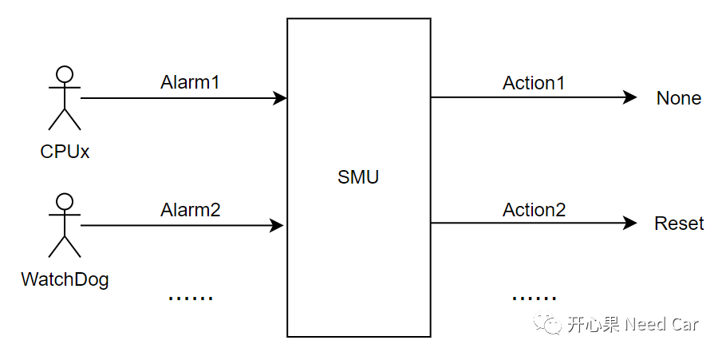
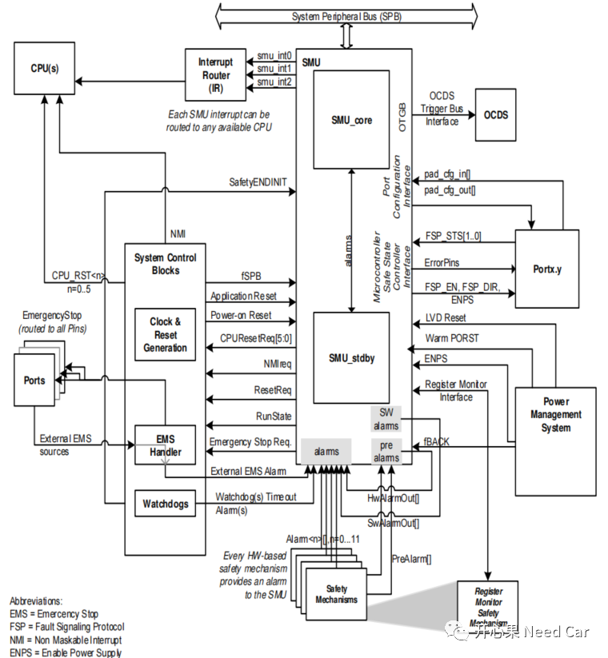
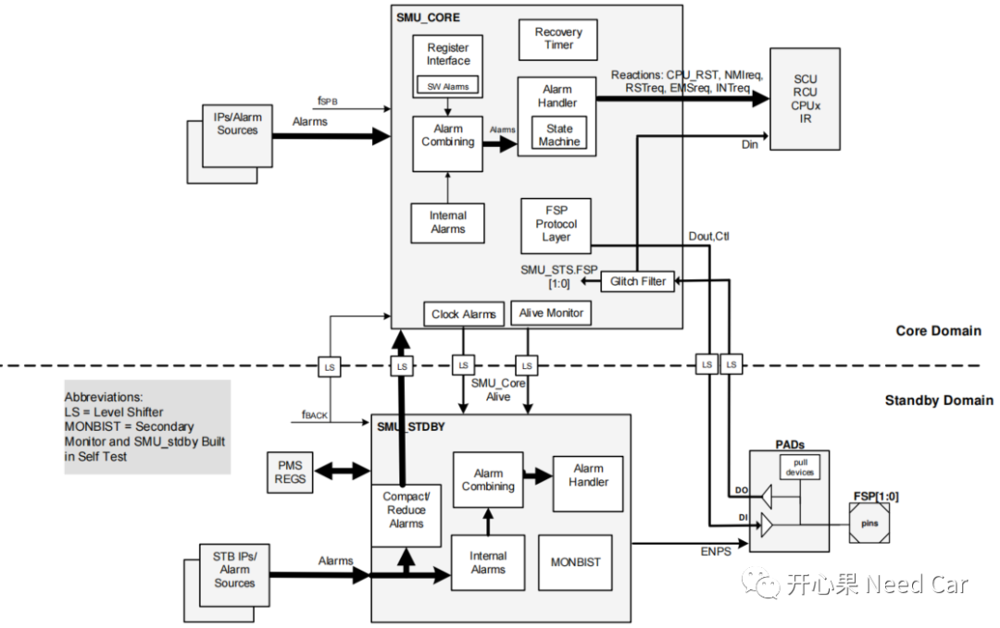
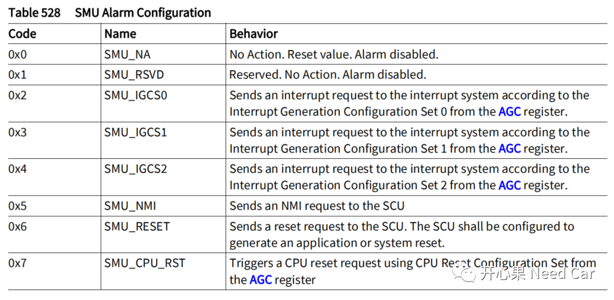
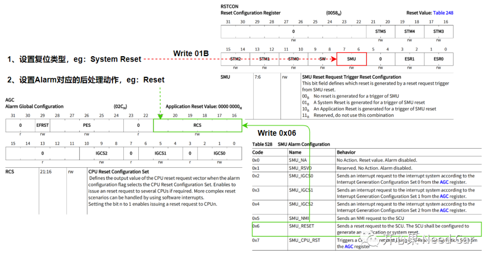
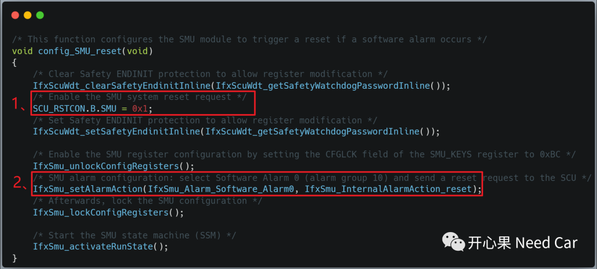

开心果 Need Car · 2023-09-26T18:30:00+08:00 · 微信原文
提示：本文基于TC375讨论
1、为什么需要Alarm？
我们知道，对于一款芯片，除了CPU（Central Processing Unit），还有大量的外设模块，他们相互配合，实现预期功能。既然是独立的硬件个体，在某些工况下，就会存在失效的可能性。为了便于管理这些失效场景，需要一个统一的大总管收集这些异常信息，之后，在对这些异常模块进行对应的处理策略。而收集异常信息的大总管就是SMU，上报异常信息的单元通过Alarm将信息通知给SMU，示意如下：

所以，设计Alarm的目的就是为监控芯片运行状态，并对故障状态进行对应的后处理。
2、Alarm由谁管理
上一小节已经给出答案，Alarm由SMU管理，SMU与其他模块地接口交互，如下所示：


3、Alarm发生时，如何处理？
参考手册，检测到Alarm以后，可以触发多种类型动作，具体描述如下：



4、程序源码
往期精彩回顾
Autosar EcuM：APP由RUN到POST_RUN浅析
如何基于HighTec将源文件（*.c）打包成静态库文件（*.a）